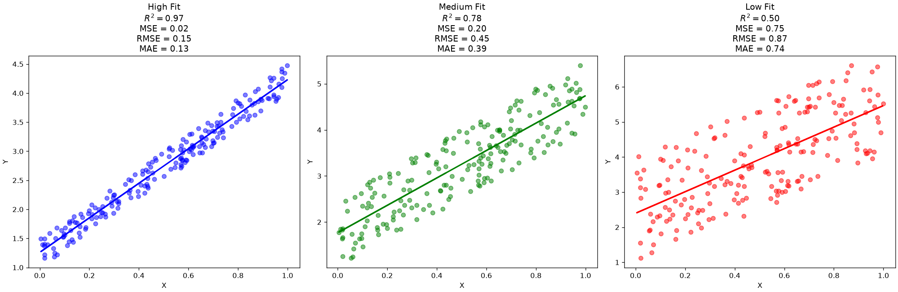
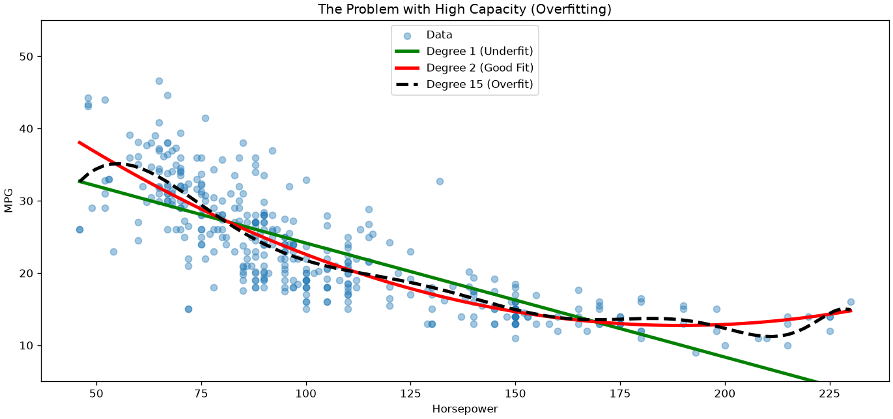
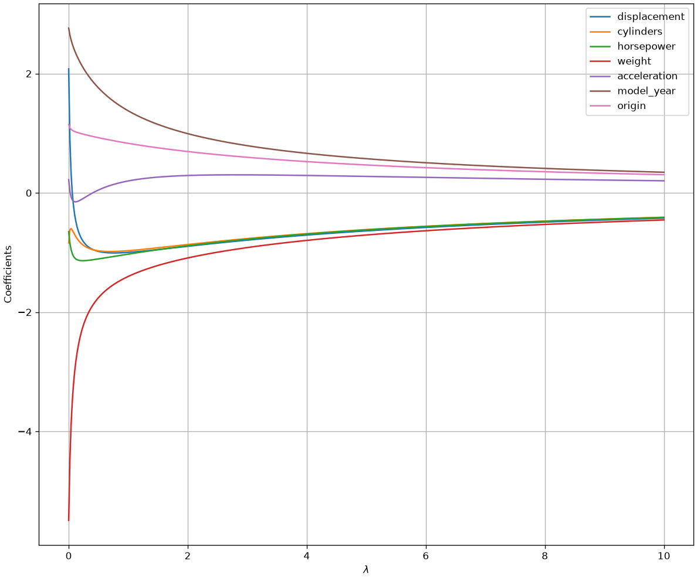
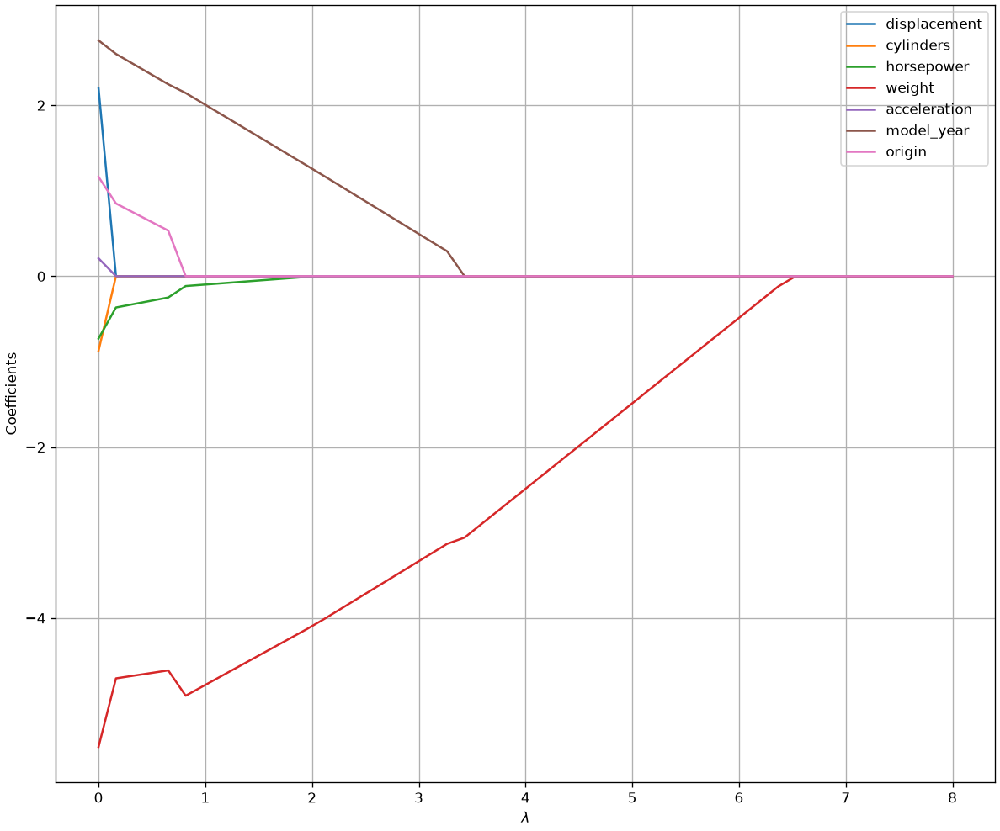
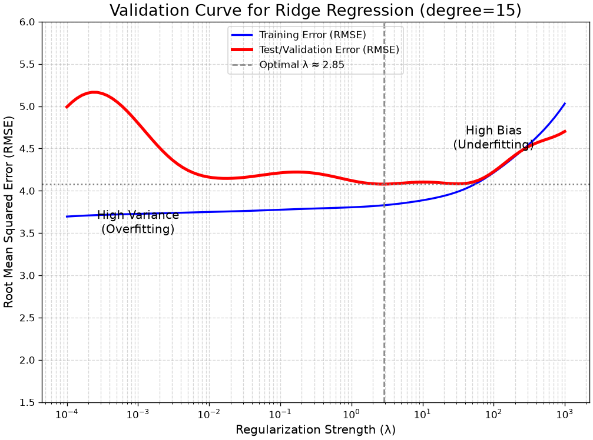
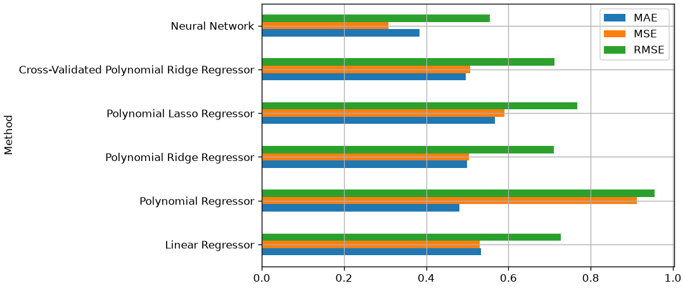

Regression for prediction: overfitting, regularization and the scikit-learn workflow
Up to now a regression model has been a way of explaining: we fitted it to all the data we had, read its coefficients, and asked whether they told a defensible story. This chapter asks the other question — how well does the model predict data it has never seen? — and the answer changes almost everything about how we fit, evaluate and choose a model.
Chapter 13 set out the protocol: a train/test split and cross-validation. Here we apply it to regression, meet the failure mode that makes the protocol necessary — overfitting — and the standard remedy, regularization. The chapter ends with the scikit-learn workflow that every practical predictive model is built from.
From Understanding to Prediction: The Machine Learning Perspective
The examples above show how quadratic and polynomial regressions allow to obtain excellent fits to the data, with improvements in terms of Adj. R-squared and significant p-vlaues.
Let’s consider the quadratic fit in particular. The Adj. R-squared (0.686) is much higher than the simple linear model’s (0.605). And the p-values for both horsepower and I(horsepower**2) are < 0.001.
This is a clear win, but at what cost?
We have lost all simple interpretability.
What is the “effect” of horsepower on mpg? It’s not \beta_1. It depends on the value of horsepower. We can’t just look at the table and give a simple explanation.
This is the pivot. If we are willing to sacrifice simple, at-a-glance interpretability in exchange for a model that fits better… why stop here?
If our main goal is no longer understanding (p-values) but predictive accuracy, we should embrace this. We have just crossed the line from statistical inference into the realm of Machine Learning.
Metrics for Prediction (Test Set Error)
When our goal is prediction (the ML approach), we do not care about R^2 or RSE on the training data. We only care about the model’s performance on new, unseen data (the Test Set).
The following metrics are used to evaluate the model on the test set. (We will use m to denote the number of samples in the test set).
Mean Squared Error (MSE)
The MSE is the average of the squared errors on the test set. It is the “predictive” version of the R_{emp} (Empirical Risk) we saw earlier.
MSE_{test} = \frac{1}{m}\sum_{j=1}^{m} (y_j - \hat{y}_j)^2
- Interpretation: This is an error measure, so a good model has a small MSE.
- Problem: The units are squared (e.g., if y is in meters, MSE is in square-meters). This is not intuitive.
Root Mean Squared Error (RMSE)
The RMSE is the fix for the MSE’s unit problem and is the most common metric for predictive regression. It is simply the square root of the MSE.
RMSE_{test} = \sqrt{MSE_{test}} = \sqrt{\frac{1}{m}\sum_{j=1}^{m} (y_j - \hat{y}_j)^2}
- Interpretation: RMSE is in the same units as Y (e.g., meters). It can be read as “On average, our model’s predictions on the test set are wrong by about [RMSE value].”
- Key Property: Because it squares errors before averaging, the RMSE penalizes large errors (outliers) more heavily than small errors.
Mean Absolute Error (MAE)
The MAE is an alternative to RMSE that is also highly interpretable.
MAE_{test} = \frac{1}{m}\sum_{j=1}^{m} |y_j - \hat{y}_j|
- Interpretation: MAE is also in the same units as Y. It measures the “average absolute error” of the predictions.
- Key Property: Unlike RMSE, MAE does not disproportionately penalize large errors. It is more robust to outliers.
Let’s revisit a plot we saw in our last lecture, adding prediction error measures to the picture:
The Problem with Power: Overfitting
We’ve solved our underfitting problem! By adding a horsepower^2 term in our quadratic regressione example, we created a model with a higher capacity (more flexibility) that fits the data better.
But this creates a new, dangerous question:
If degree=2 is good, is degree=5 better? What about degree=20?
A high-degree polynomial model has enormous capacity. It can “wiggle” as much as it needs to fit every single data point. This leads to the central problem of machine learning: overfitting.
Overfitting (or high variance) is when a model learns the noise in the training data, not the underlying signal. It will have a fantastic R^2 on the data it was trained on, but will fail (generalize) miserably on any new data.
Look at the example below:

We can see that, while the linear model is clearly underfitting, the high-degree polynomial is overfitting! The quadratic model seems to be in the sweet spot, but how shall we find the correct degree in a systematic way?
The Solution: Regularization
The plot above shows our dilemma: the degree=15 model is “too powerful.” How can we use a high-capacity model without it overfitting?
Unfortunately, as the model becomes complex, it’s not straightforward to use plain statistics to answer this question.
Instead, following a pure machine learning perspective, we will use a technique called regularization.
Regularization adds a “penalty” to the cost function to discourage the model from becoming too complex.
Instead of just minimizing RSS, we minimize
RSS + \text{Penalty Term}
This penalty term is designed to force the \beta coefficients to stay small. A “wiggly” (overfit) curve requires massive \beta coefficients. By penalizing large coefficients, we force the model to find a simpler, smoother curve, even if it has many features.
Revisiting Collinearity
Regularization also happens to be a fantastic solution to our other major problem: multicollinearity.
As we saw in chapter 8, when predictors like horsepower and weight are highly correlated, the X^T X matrix is ill-conditioned, and the OLS coefficient estimates become unstable and their standard errors explode.
Regularization “stabilizes” this matrix, allowing the model to find sensible, stable coefficients even in the presence of multicollinearity.
Ridge Regression (L2 Penalty)
Ridge Regression is the most common type of regularization. It adds a penalty proportional to the sum of the squares of the coefficients. This is also called the L_2 norm.
The cost function becomes:
RSS_{L2} = \sum_{i=1}^m (y_i - \hat{y}_i)^2 + \lambda \sum_{j=1}^n \beta_j^2
- The RSS term pushes the model to fit the data (reducing bias).
- The \lambda \sum \beta_j^2 term pushes the coefficients to be small (reducing variance).
The hyperparameter \lambda (called alpha in code) controls this tradeoff.
- \lambda = 0: This is just standard OLS.
- \lambda \to \infty: The penalty is everything. All coefficients are forced to zero (a flat line).
Key Property: Ridge Regression shrinks coefficients close to zero, but it will not set them exactly to zero.
Crucial Step: Because the penalty \sum \beta_j^2 is based on the size of the coefficients, it is critical that we standardize (z-score) all our features first. Otherwise, a feature measured in kilometers will be penalized differently than one measured in millimeters.
Note that the problem above is solved with OLS as follows:
\hat{\beta}_{Ridge} = (X^TX + \lambda I)^{-1}X^Ty
where the $I $ term improves conditioning (invertibility) of the matrix even in the presence of multicollinearity.

As you can see, as \lambda increases, all coefficients are smoothly “shrunk” toward zero. Interestingly, the model “decides” which coefficients to shrink for a given value of \lambda. For instance, for low values of \lambda, weight is shrunk, while acceleration is first shrunk, then allowed to be larger than zero. This is due to the fact that, the regularization term acts as a sort of “soft constraint” encouraging the model to find smaller weights, while still finding a good solution.
It can be shown (but we will not see it formally), that ridge regression reduces the variance of coefficient estimates. At the same time, the bias is increased. So, finding a good value of \lambda allows to control the bias-variance trade-off.
Interpretation of the ridge regression coefficients
Let us compare the parameters obtained through a ridge regressor with those obtained with a linear regressor (OLS):
params = pd.DataFrame({'variables':['displacement','cylinders' , 'horsepower' , 'weight' , 'acceleration' , 'model_year' , 'origin'], 'ridge_params':ols("mpg ~ displacement + cylinders + horsepower + weight + acceleration + model_year + origin", data2).fit_regularized(L1_wt=0, alpha=1).params[1:],'ols_params':ols("mpg ~ displacement + cylinders + horsepower + weight + acceleration + model_year + origin", data2).fit().params[1:]}).set_index('variables')
params| ridge_params | ols_params | |
|---|---|---|
| variables | ||
| displacement | -0.998445 | 2.079303 |
| cylinders | -0.969852 | -0.840519 |
| horsepower | -1.027231 | -0.651636 |
| weight | -1.401530 | -5.492050 |
| acceleration | 0.199621 | 0.222014 |
| model_year | 1.375600 | 2.762119 |
| origin | 0.830411 | 1.147316 |
As we can see, the ridge parameters has a smaller scale. This is due to the regularization term. As a result, the parameters cannot be interpreted statistically as the ones of a linear regressor. Instead, we can interpret them as denoting the relative importance of the variable to the prediction.
Lasso Regression (L_1 Penalty)
Lasso is an alternative that has a different, very useful property. It adds a penalty proportional to the sum of the absolute values of the coefficients. This is also called the L_1 norm.
The cost function becomes:
RSS_{L1} = \sum_{i=1}^m (y_i - \hat{y}_i)^2 + \lambda \sum_{j=1}^n |\beta_j|
This subtle change has a profound effect. The “sharp corners” of the absolute value function allow the optimization to find solutions where “useless” coefficients are set to exactly zero.
Its Superpower: Lasso performs automatic feature selection, which is great when you have hundreds of features.
The figure below shows how the coefficient estimates change for different values of \lambda:
from scipy.stats import zscore
from statsmodels.formula.api import ols
import pandas as pd
column_names = ["mpg", "cylinders", "displacement", "horsepower", "weight", "acceleration", "model_year", "origin", "car_name"]
data = pd.read_csv(DATA + "auto_mpg.data", sep=r"\s+", names=column_names, na_values="?")
data = data[["displacement", "cylinders", "horsepower", "weight", "acceleration", "model_year", "origin", "mpg"]]
data2=data.dropna().drop('mpg',axis=1).apply(zscore).join(data.dropna()['mpg'])
dd=[]
for alpha in np.linspace(0,8,50):
d=ols("mpg ~ displacement + cylinders + horsepower + weight + acceleration + model_year + origin", data2).fit_regularized(L1_wt=1, alpha=alpha).params
d= pd.Series(
{
c:v for c,v in zip(["Intercept","displacement", "cylinders", "horsepower" ,"weight" ,"acceleration", "model_year" ,"origin"],d)
}
)
d['alpha']=alpha
dd.append(d)
dd=pd.concat(dd,axis=1).T
dd.drop('Intercept',axis=1).plot(x='alpha', figsize=(12,10))
plt.xlabel("$\lambda$")
plt.ylabel("Coefficients")
plt.grid()
As can be seen, the model now makes “hard choices” on whether a value should be set to zero or not, thus performing variable selection. Once Lasso regression identified the variables to remove, we could create a reduced dataset keeping only columns with nonzero coefficients and fit a regular, interpretable, linear regressor with the original, non standardized, data.
Regularization and the Bias-Variance Tradeoff
Regularization is our first, and most powerful, tool for explicitly managing the Bias-Variance Tradeoff.
Let’s think about the two extremes:
- A Standard OLS Model (or high-degree polynomial)
- This model’s only goal is to minimize RSS.
- It will “succeed” by fitting the training data perfectly, including all its noise.
- This results in a model with \text{Low Bias} (it’s a perfect fit for the data it saw) but \text{Extremely High Variance} (it’s “nervous” and will fail on new data). This is overfitting.
- A Regularized Model (Ridge or Lasso)
- This model has a different goal: minimize RSS + \text{Penalty Term}.
- To get the lowest total score, it is forced to make a compromise. It will intentionally stop fitting the training data perfectly, in order to make its coefficients smaller and reduce the penalty.
- This is the trade-off in action:
- We increase the bias slightly (because our model is now “imperfect” for the training data).
- In exchange, we dramatically decrease the variance (because the model is smoother and no longer chasing noise).
\lambda is the “Tradeoff Knob”
The hyperparameter \lambda (called alpha in scikit-learn) is our explicit control knob for moving along the bias-variance curve.
- When \lambda = 0: We are on the far right of the graph. We have a standard OLS model with \text{Low Bias} and \text{High Variance} (overfitting).
- As we increase \lambda: We “turn the knob,” increasing the penalty. This moves us left on the graph. \text{Bias} starts to go up, but \text{Variance} drops faster. The Total Error (the black line) goes down.
- At the “sweet spot”: We find the optimal \lambda that gives us the lowest possible Total Error.
- As \lambda \to \infty: We move to the far left of the graph. We are penalizing the coefficients so much that they all become zero (a flat line). The model has \text{High Bias} and \text{Low Variance} (underfitting).
The entire goal of the machine learning workflow, which we are about to see, is to find the optimal value of \lambda. We can’t use our statsmodels p-values for this. We must use a new technique, cross-validation, to find the \lambda that gives the best predictive score on unseen data.
The plot below shows how training and validation error change when fitting a polynomial of degree 15 (a high-capacity model) as we increase the regularization hyperparameter \lambda, which illustrates how regularization controls the bias-variance trade-off.

Let’s see how to interpret the plot:
- Left Side (λ is tiny, e.g., 0.001):
- The Training Error (blue) is very low. The model is overfitting the training data.
- The Test Error (red) is high. The model is not generalizing well.
- This is the High Variance region.
- Right Side (λ is large, e.g., 1000):
- The Training Error is high and almost equal to the test error. The model is too simple (too penalized).
- The Test Error is also high.
- This is the High Bias region (underfitting).
- The “Sweet Spot” (Dashed Line):
- This is the optimal \lambda (our optimal \lambda).
- It’s the “Goldilocks” point where the Test Error is at its minimum.
- This is the perfect balance between bias and variance, giving us the best possible predictive model.
From Theory to Practice: The scikit-learn Workflow
We have now established all the theory.
- Our Problem: Simple linear models can underfit (high bias), like the “U-shape” in our
mpg ~ horsepowerplot. - A Solution: We can use Polynomial Regression to add non-linear features (X^2, X^3, \ldots) which gives our model higher capacity to fit the curve.
- The New Problem: High-capacity models can easily overfit (high variance), “memorizing” the training data noise.
- A Better Solution: We use Regularization (Ridge L_2 or Lasso L_1) to add a penalty (\lambda) that controls this high capacity, finding the “sweet spot” in the Bias-Variance tradeoff.
We’ve seen the theory of \lambda. Now we need a practical, robust workflow to actually find the best \lambda and build the best predictive model.
It’s time to switch from statsmodels (built for inference) to scikit-learn (built for prediction).
Our New Toolkit
Our new workflow requires new rules and tools:
- Train/Test Split: This is the Golden Rule. We must split our data to simulate a “future” test set. Our only goal is to get the best score (e.g., RMSE) on this test data.
- Standardization: We must scale our features (e.g.,
StandardScaler) so the regularization penalty \lambda affects them all fairly. - Pipelines: We must bundle our steps (scaling, polynomial features, model) together. This is a best practice that prevents “data leakage” and makes our workflow reproducible.
Dataset
We’ll use the California Housing dataset provided by the scikit-learn library. Let us load the data as a dataframe and have a look at the data description:
from sklearn.datasets import fetch_california_housing
data = fetch_california_housing(as_frame=True)
print(data['DESCR'])
data['data'].. _california_housing_dataset:
California Housing dataset
--------------------------
**Data Set Characteristics:**
:Number of Instances: 20640
:Number of Attributes: 8 numeric, predictive attributes and the target
:Attribute Information:
- MedInc median income in block group
- HouseAge median house age in block group
- AveRooms average number of rooms per household
- AveBedrms average number of bedrooms per household
- Population block group population
- AveOccup average number of household members
- Latitude block group latitude
- Longitude block group longitude
:Missing Attribute Values: None
This dataset was obtained from the StatLib:
https://lib.stat.cmu.edu/datasets/houses.zip
The target variable is the median house value for California districts,
expressed in hundreds of thousands of dollars ($100,000).
This dataset was derived from the 1990 U.S. census, using one row per census
block group. A block group is the smallest geographical unit for which the U.S.
Census Bureau publishes sample data (a block group typically has a population
of 600 to 3,000 people).
A household is a group of people residing within a home. Since the average
number of rooms and bedrooms in this dataset are provided per household, these
columns may take surprisingly large values for block groups with few households
and many empty houses, such as vacation resorts.
It can be downloaded/loaded using the
:func:`sklearn.datasets.fetch_california_housing` function.
.. rubric:: References
- Pace, R. Kelley and Ronald Barry, Sparse Spatial Autoregressions,
Statistics and Probability Letters, 33:291-297, 1997.
| MedInc | HouseAge | AveRooms | AveBedrms | Population | AveOccup | Latitude | Longitude | |
|---|---|---|---|---|---|---|---|---|
| 0 | 8.3252 | 41.0 | 6.984127 | 1.023810 | 322.0 | 2.555556 | 37.88 | -122.23 |
| 1 | 8.3014 | 21.0 | 6.238137 | 0.971880 | 2401.0 | 2.109842 | 37.86 | -122.22 |
| 2 | 7.2574 | 52.0 | 8.288136 | 1.073446 | 496.0 | 2.802260 | 37.85 | -122.24 |
| 3 | 5.6431 | 52.0 | 5.817352 | 1.073059 | 558.0 | 2.547945 | 37.85 | -122.25 |
| 4 | 3.8462 | 52.0 | 6.281853 | 1.081081 | 565.0 | 2.181467 | 37.85 | -122.25 |
| ... | ... | ... | ... | ... | ... | ... | ... | ... |
| 20635 | 1.5603 | 25.0 | 5.045455 | 1.133333 | 845.0 | 2.560606 | 39.48 | -121.09 |
| 20636 | 2.5568 | 18.0 | 6.114035 | 1.315789 | 356.0 | 3.122807 | 39.49 | -121.21 |
| 20637 | 1.7000 | 17.0 | 5.205543 | 1.120092 | 1007.0 | 2.325635 | 39.43 | -121.22 |
| 20638 | 1.8672 | 18.0 | 5.329513 | 1.171920 | 741.0 | 2.123209 | 39.43 | -121.32 |
| 20639 | 2.3886 | 16.0 | 5.254717 | 1.162264 | 1387.0 | 2.616981 | 39.37 | -121.24 |
20640 rows × 8 columns
The dataset contains 8 variables. The independent variable is MedInc, the average value of houses in a given suburb, while all other variables are independent. For our aims, we will treat the data as a matrix of numerical variables. We could easily convert the dataframe in this format, but scikit-learn allows to load the data directly in this format:
# let us load the data without passing as_frame=True
data = fetch_california_housing()
X = data.data # the features
y = data.target # the targets
print(X.shape, y.shape)(20640, 8) (20640,)Data Splitting
We will split the dataset into a training, a validation and a test set using the train_test_split function:
from sklearn.model_selection import train_test_split
# We'll do a 60:20:20 split
val_prop = 0.2
test_prop = 0.2
# We'll split the data in two steps - first let's create a test set and a combined trainval set
X_trainval, X_test, y_trainval, y_test = train_test_split(X, y, test_size=test_prop, random_state=42)
# We'll now split the combined trainval into train and val set with the chosen proportions
X_train, X_val, y_train, y_val = train_test_split(X_trainval, y_trainval, test_size=test_prop/(1-test_prop), random_state=42)
# Let us check shapes and proportions
print(X_train.shape, X_val.shape, X_test.shape)
print(X_train.shape[0]/X.shape[0], X_val.shape[0]/X.shape[0], X_test.shape[0]/X.shape[0])(12384, 8) (4128, 8) (4128, 8)
0.6 0.2 0.2The train_test_split function will split the data randomly. We are passing a fixed random_state to be able to replicate the results, but, in general, we should avoid that if we want the split to be truly random (though it is common to use random seeds for splitting in research). Note that, while the split is random, the function makes sure that the i-th element of the y variable corresponds to the i-th element of the X variable after the split.
We will now reason mainly on the validation set, comparing different models and parameter configurations. Once we are done with our explorations, we’ll check the final results on the test set.
Data Normalization
We’ll start by normalizing the data with z-scoring. This will prove useful later when we use certain algorithms (e.g., regularization). Note that we have not normalized data before because we need to make sure that even mean and standard deviation parameters are not computed on the validation or test set. While this may seem a trivial detail, it is important to follow this rule as strictly as possible to avoid bias. We can normalize the data with the StandardScaler object:
from sklearn.preprocessing import StandardScaler
scaler = StandardScaler()
scaler.fit(X_train) # tunes the internal parameters of the standard scaler
X_train = scaler.transform(X_train) # does not tune the parameters anymore
X_val = scaler.transform(X_val)
X_test = scaler.transform(X_test)Scikit-learn objects have a unified object-oriented interface. Each algorithm is an object (e.g., StandardScaler) with standard methods, such as:
- A
fitmethod to tune the internal parameters of the algorithm. In this case, it is a vector of means and a vector of standard deviations, but in the case of a linear regression it will be a vector of weights; - A
transformmethod to transform the data. Note that in this stage no parameters are tuned, so we can safely apply this method to validation and test data. This method only applies to objects which transform the data, such as the standard scaler; - A
predictmethod to obtain predictions. This applies only to predictive models, such as a linear regressor; - A
scoremethod to obtain a standard performance measure on the test or validation data. Also this only applies to predictive models.
We will see examples of the last two methods later.
Linear Regressor
We will start by training a linear regressor. We will use scikit-learn’s implementation which does not provide statistical details (e.g., p-values) but is optimized for predictive modeling. The train/test interface is the same as above:
from sklearn.linear_model import LinearRegression
linear_regressor = LinearRegression()
linear_regressor.fit(X_train, y_train) # this tunes the internal parameters of the model
# Let us print the model's parameters
print(linear_regressor.coef_)
print(linear_regressor.intercept_)[ 0.86025287 0.1200073 -0.28039183 0.31208687 -0.00957447 -0.02615781
-0.88821331 -0.86190739]
2.068077419250432We can obtain predictions on the validation set using the predict method:
y_val_pred = linear_regressor.predict(X_val)
print(y_val_pred.shape)(4128,)The function returns a vector of 4128 predictions, one for each example in the validation set. We can now evaluate the predictions using regression evaluation measures. We will use the standard implementation of the main evaluation measures as provided by scikit-learn:
from sklearn.metrics import mean_absolute_error
from sklearn.metrics import mean_squared_error
mae = mean_absolute_error(y_val, y_val_pred)
mse = mean_squared_error(y_val, y_val_pred)
rmse = np.sqrt(mse)
print(mae, mse, rmse)0.5333346447415043 0.5297481095803488 0.727837969317587All evaluation measures in scikit-learn follow the evaluation_measure(y_true, y_pred) convention. Note that the target variable MedInc is measured in tens of thousands of dollars, so an MAE of about 0.5 corresponds to an average error of about 5000 dollars. This is not that bad if we consider the mean and standard deviation of targets:
y_train.mean(), y_train.std()(np.float64(2.0680774192506464), np.float64(1.1509151433486544))Each predictor in scikit-learn also provides a score method which takes as input the validation (or test) inputs and outputs and computes some standard evaluation measures. By default the linear regressor in scikit-learn returns the R^2 value:
linear_regressor.score(X_val, y_val)0.6142000785497264While we are mainly interested in the performance of the model on the validation set (and ultimately on those on the test set), it is still useful to assess the performance on the training set for model diagnostics. For instance, if we see a big discrepancy between training and validation errors, then we can imagine that some overfitting is going on:
y_train_pred = linear_regressor.predict(X_train)
mae_train = mean_absolute_error(y_train, y_train_pred)
mse_train = mean_squared_error(y_train, y_train_pred)
rmse_train = np.sqrt(mse_train)
print(mae_train, mse_train, rmse_train)0.5266487515751345 0.5143795055231385 0.7172025554354491We can see that, while there are some differences between training and test performance, those are minor, so we can deduce that there is no significant overfitting going on.
We should note that we should always expect a certain degree of overfitting, depending on the task, the data and the model. When the difference between train and test error is large, and hence there is significant overfitting, we can try to reduce this effect with regularization techniques.
To better compare models, we will now store the results of our analyses in a dataframe:
import pandas as pd
california_housing_val_results = pd.DataFrame({
'Method': ['Linear Regressor'],
'Parameters': [''],
'MAE': [mae],
'MSE': [mse],
'RMSE': [rmse]
})
california_housing_val_results| Method | Parameters | MAE | MSE | RMSE | |
|---|---|---|---|---|---|
| 0 | Linear Regressor | 0.533335 | 0.529748 | 0.727838 |
It is common to use the word “method” to refer to a predictive algorithm or pipeline.
Non-Linear Regression
Let us now try to fit a non-linear regressor. We will use polynomial regression with different polynomial degrees. To do so, we will perform an explicit polynomial expansion of the features using the PolynomialFeatures object. For convenience, we will define a function performing training and validation and returning both training and validation performance:
from sklearn.preprocessing import PolynomialFeatures
def trainval_polynomial(degree):
pf = PolynomialFeatures(degree)
# While the model does not have any learnable parameters, the "fit" method here is used to compute the output number of features
pf.fit(X_train)
X_train_poly = pf.transform(X_train)
X_val_poly = pf.transform(X_val)
polyreg = LinearRegression() # a Polynomial regressor is simply a linear regressor using polynomial features
polyreg.fit(X_train_poly, y_train)
y_poly_train_pred = polyreg.predict(X_train_poly)
y_poly_val_pred = polyreg.predict(X_val_poly)
mae_train = mean_absolute_error(y_train, y_poly_train_pred)
mse_train = mean_squared_error(y_train, y_poly_train_pred)
rmse_train = np.sqrt(mean_squared_error(y_train, y_poly_train_pred))
mae_val = mean_absolute_error(y_val, y_poly_val_pred)
mse_val = mean_squared_error(y_val, y_poly_val_pred)
rmse_val = np.sqrt(mean_squared_error(y_val, y_poly_val_pred))
return mae_train, mse_train, rmse_train, mae_val, mse_val, rmse_valLet us now see what happens with different degrees:
for d in range(1,4):
print("DEGREE: {} \n {:>8s} {:>8s} {:>8s}\nTRAIN {:8.2f} {:8.2f} {:8.2f} \nVAL {:8.2f} {:8.2f} {:8.2f}\n\n".format(d,"MAE", "MSE", "RMSE", *trainval_polynomial(d)))DEGREE: 1
MAE MSE RMSE
TRAIN 0.53 0.51 0.72
VAL 0.53 0.53 0.73
DEGREE: 2
MAE MSE RMSE
TRAIN 0.46 0.42 0.65
VAL 0.48 0.91 0.95
DEGREE: 3
MAE MSE RMSE
TRAIN 0.42 0.34 0.58
VAL 23.18 2102256.43 1449.92
Ridge Regularization
We can see that, as the polynomial gets larger, the effect of overfitting increases. We can try to reduce this effect with Ridge or Lasso regularization. We’ll focus on degree 2 and try to apply ridge regression to it. Since Ridge regression relies on a parameter, we will try some values of the regularization parameter \alpha (as it is called by sklearn). Let us define a function for convenience:
from sklearn.linear_model import Ridge
def trainval_polynomial_ridge(degree, alpha):
pf = PolynomialFeatures(degree)
# While the model does not have any learnable parameters, the "fit" method here is used to compute the output number of features
pf.fit(X_train)
X_train_poly = pf.transform(X_train)
X_val_poly = pf.transform(X_val)
polyreg = Ridge(alpha=alpha) # a Polynomial regressor is simply a linear regressor using polynomial features
polyreg.fit(X_train_poly, y_train)
y_poly_train_pred = polyreg.predict(X_train_poly)
y_poly_val_pred = polyreg.predict(X_val_poly)
mae_train = mean_absolute_error(y_train, y_poly_train_pred)
mse_train = mean_squared_error(y_train, y_poly_train_pred)
rmse_train = np.sqrt(mean_squared_error(y_train, y_poly_train_pred))
mae_val = mean_absolute_error(y_val, y_poly_val_pred)
mse_val = mean_squared_error(y_val, y_poly_val_pred)
rmse_val = np.sqrt(mean_squared_error(y_val, y_poly_val_pred))
return mae_train, mse_train, rmse_train, mae_val, mse_val, rmse_valLet us now see the results for different values of \alpha. \alpha=0 means no regularization:
print("RIDGE, DEGREE: 2")
for alpha in [0,100,200,300,400]:
print("Alpha: {:0.2f} \n {:>8s} {:>8s} {:>8s}\nTRAIN {:8.2f} {:8.2f} {:8.2f} \nVAL {:8.2f} {:8.2f} {:8.2f}\n\n".format(alpha,"MAE", "MSE", "RMSE", *trainval_polynomial_ridge(2,alpha)))RIDGE, DEGREE: 2
Alpha: 0.00
MAE MSE RMSE
TRAIN 0.46 0.42 0.65
VAL 0.48 0.91 0.96
Alpha: 100.00
MAE MSE RMSE
TRAIN 0.47 0.43 0.66
VAL 0.48 0.54 0.74
Alpha: 200.00
MAE MSE RMSE
TRAIN 0.48 0.44 0.67
VAL 0.49 0.51 0.72
Alpha: 300.00
MAE MSE RMSE
TRAIN 0.49 0.46 0.68
VAL 0.50 0.50 0.71
Alpha: 400.00
MAE MSE RMSE
TRAIN 0.50 0.47 0.68
VAL 0.51 0.51 0.71
We can see how, as alpha increases, the error on the training set increases, while the error on the test set decreases. For \alpha=300 we obtained a slightly better result than our linear regressor:
california_housing_val_results| Method | Parameters | MAE | MSE | RMSE | |
|---|---|---|---|---|---|
| 0 | Linear Regressor | 0.533335 | 0.529748 | 0.727838 |
Let us see if we can improve the results with a polynomial of degree 3:
print("RIDGE, DEGREE: 3")
for alpha in [0,1,10,20]:
print("Alpha: {:0.2f} \n {:>8s} {:>8s} {:>8s}\nTRAIN {:8.2f} {:8.2f} {:8.2f} \nVAL {:8.2f} {:8.2f} {:8.2f}\n\n".format(alpha,"MAE", "MSE", "RMSE", *trainval_polynomial_ridge(3,alpha)))RIDGE, DEGREE: 3
Alpha: 0.00
MAE MSE RMSE
TRAIN 0.42 0.34 0.58
VAL 23.50 2162209.37 1470.45
Alpha: 1.00
MAE MSE RMSE
TRAIN 0.42 0.34 0.58
VAL 15.59 934580.17 966.74
Alpha: 10.00
MAE MSE RMSE
TRAIN 0.42 0.34 0.59
VAL 1.57 4867.65 69.77
Alpha: 20.00
MAE MSE RMSE
TRAIN 0.42 0.35 0.59
VAL 1.78 6690.78 81.80
Let us add the results of Polynomial regression of degree 2 with and without regularization:
poly2 = trainval_polynomial_ridge(2,0)
poly2_ridge300 = trainval_polynomial_ridge(2,300)
california_housing_val_results = pd.concat([
california_housing_val_results,
pd.DataFrame({'Method':'Polynomial Regressor', 'Parameters': 'degree=2', 'MAE':poly2[-3], 'MSE':poly2[-2], 'RMSE':poly2[-1]}, index=[1]),
pd.DataFrame({'Method':'Polynomial Ridge Regressor', 'Parameters': 'degree=2, alpha=300', 'MAE':poly2_ridge300[-3], 'MSE':poly2_ridge300[-2], 'RMSE':poly2_ridge300[-1]}, index=[2])
])
california_housing_val_results| Method | Parameters | MAE | MSE | RMSE | |
|---|---|---|---|---|---|
| 0 | Linear Regressor | 0.533335 | 0.529748 | 0.727838 | |
| 1 | Polynomial Regressor | degree=2 | 0.480437 | 0.912971 | 0.955495 |
| 2 | Polynomial Ridge Regressor | degree=2, alpha=300 | 0.499228 | 0.504155 | 0.710039 |
Lasso Regression
Let us now try the same with Lasso regression:
from sklearn.linear_model import Lasso
def trainval_polynomial_lasso(degree, alpha):
pf = PolynomialFeatures(degree)
# While the model does not have any learnable parameters, the "fit" method here is used to compute the output number of features
pf.fit(X_train)
X_train_poly = pf.transform(X_train)
X_val_poly = pf.transform(X_val)
polyreg = Lasso(alpha=alpha) # a Polynomial regressor is simply a linear regressor using polynomial features
polyreg.fit(X_train_poly, y_train)
y_poly_train_pred = polyreg.predict(X_train_poly)
y_poly_val_pred = polyreg.predict(X_val_poly)
mae_train = mean_absolute_error(y_train, y_poly_train_pred)
mse_train = mean_squared_error(y_train, y_poly_train_pred)
rmse_train = np.sqrt(mean_squared_error(y_train, y_poly_train_pred))
mae_val = mean_absolute_error(y_val, y_poly_val_pred)
mse_val = mean_squared_error(y_val, y_poly_val_pred)
rmse_val = np.sqrt(mean_squared_error(y_val, y_poly_val_pred))
return mae_train, mse_train, rmse_train, mae_val, mse_val, rmse_valprint("LSSO, DEGREE: 2")
for alpha in [0.02,0.03,0.04,0.05, 0.06]:
print("Alpha: {:0.2f} \n {:>8s} {:>8s} {:>8s}\nTRAIN {:8.2f} {:8.2f} {:8.2f} \nVAL {:8.2f} {:8.2f} {:8.2f}\n\n".format(alpha,"MAE", "MSE", "RMSE", *trainval_polynomial_lasso(2,alpha)))LSSO, DEGREE: 2
Alpha: 0.02
MAE MSE RMSE
TRAIN 0.52 0.51 0.71
VAL 0.54 1.19 1.09
Alpha: 0.03
MAE MSE RMSE
TRAIN 0.55 0.55 0.74
VAL 0.55 0.59 0.77
Alpha: 0.04
MAE MSE RMSE
TRAIN 0.56 0.57 0.76
VAL 0.57 0.59 0.77
Alpha: 0.05
MAE MSE RMSE
TRAIN 0.58 0.60 0.78
VAL 0.58 0.61 0.78
Alpha: 0.06
MAE MSE RMSE
TRAIN 0.60 0.63 0.80
VAL 0.60 0.64 0.80
Lasso regression does not seem to improve results. Let us put the results obtained for \alpha=0.04 to the dataframe:
poly2_lasso004 = trainval_polynomial_lasso(2,0.04)
california_housing_val_results = pd.concat([
california_housing_val_results,
pd.DataFrame({'Method':'Polynomial Lasso Regressor', 'Parameters': 'degree=2, alpha=0.04', 'MAE':poly2_lasso004[-3], 'MSE':poly2_lasso004[-2], 'RMSE':poly2_lasso004[-1]}, index=[3])
])
california_housing_val_results| Method | Parameters | MAE | MSE | RMSE | |
|---|---|---|---|---|---|
| 0 | Linear Regressor | 0.533335 | 0.529748 | 0.727838 | |
| 1 | Polynomial Regressor | degree=2 | 0.480437 | 0.912971 | 0.955495 |
| 2 | Polynomial Ridge Regressor | degree=2, alpha=300 | 0.499228 | 0.504155 | 0.710039 |
| 3 | Polynomial Lasso Regressor | degree=2, alpha=0.04 | 0.567318 | 0.590100 | 0.768180 |
Grid Search
Polynomial regression and ridge regression have parameters to optimize. We have so far optimized them manually. However, in practice, it is common to perform a grid search. This consists in defining a grid of possible values to try and train/validate many models, to finally choose the one with best performance.
This can be done manually as shown in the following example:
def grid_search(alphas=range(200,400,25), degrees=range(5)):
best_mse = np.inf
for a in alphas:
for d in degrees:
print(f"Evaluating a={a} d={d} MSE=", end='')
results = trainval_polynomial_ridge(d,a)
mse = results[-2]
print(f"{mse:0.2f}")
if mse<best_mse:
best_mse = mse
best_alpha = a
best_degree = d
return best_mse, best_alpha, best_degree
grid_search()Evaluating a=200 d=0 MSE=1.37
Evaluating a=200 d=1 MSE=0.53
Evaluating a=200 d=2 MSE=0.51
Evaluating a=200 d=3 MSE=8161.95
Evaluating a=200 d=4 MSE=10884349.27
Evaluating a=225 d=0 MSE=1.37
Evaluating a=225 d=1 MSE=0.53
Evaluating a=225 d=2 MSE=0.51
Evaluating a=225 d=3 MSE=6710.18
Evaluating a=225 d=4 MSE=7244284.75
Evaluating a=250 d=0 MSE=1.37
Evaluating a=250 d=1 MSE=0.53
Evaluating a=250 d=2 MSE=0.51
Evaluating a=250 d=3 MSE=5542.92
Evaluating a=250 d=4 MSE=4880844.16
Evaluating a=275 d=0 MSE=1.37
Evaluating a=275 d=1 MSE=0.53
Evaluating a=275 d=2 MSE=0.50
Evaluating a=275 d=3 MSE=4598.99
Evaluating a=275 d=4 MSE=3313009.83
Evaluating a=300 d=0 MSE=1.37
Evaluating a=300 d=1 MSE=0.54
Evaluating a=300 d=2 MSE=0.50
Evaluating a=300 d=3 MSE=3831.00
Evaluating a=300 d=4 MSE=2255949.80
Evaluating a=325 d=0 MSE=1.37
Evaluating a=325 d=1 MSE=0.54
Evaluating a=325 d=2 MSE=0.50
Evaluating a=325 d=3 MSE=3202.40
Evaluating a=325 d=4 MSE=1534630.58
Evaluating a=350 d=0 MSE=1.37
Evaluating a=350 d=1 MSE=0.54
Evaluating a=350 d=2 MSE=0.51
Evaluating a=350 d=3 MSE=2684.99
Evaluating a=350 d=4 MSE=1038260.39
Evaluating a=375 d=0 MSE=1.37
Evaluating a=375 d=1 MSE=0.54
Evaluating a=375 d=2 MSE=0.51
Evaluating a=375 d=3 MSE=2256.89
Evaluating a=375 d=4 MSE=695246.02(0.5041553563051261, 300, 2)Testing a range of values, we found that best results are obtained with degree equal to 2 and \alpha=300.
Scikit-Learn Pipelines
Often, a predictive model is obtained by stacking different components. For instance, in our example, a Polynomial regressor is obtained by following this pipeline:
- Data standardization;
- Polynomial feature expansion:
- Ridge regression.
While these steps can be carried out independently as seen before, scikit-learn offers the powerful interface of Pipelines to automate this process. A pipeline stacks different components together and makes it convenient to change some of elements of the pipeline or to optimize its parameters. Let us define a pipeline as the one discussed above:
from sklearn.pipeline import Pipeline
polynomial_regressor = Pipeline([
('scaler', StandardScaler()),
('polynomial_expansion', PolynomialFeatures()),
('ridge_regression', Ridge())
])To take full advantage of the pipeline, we will re-load the dataset and avoid applying the standard scaler manually:
# let us load the data without passing as_frame=True
data = fetch_california_housing()
X = data.data # the features
y = data.target # the targets
# We'll do a 60:20:20 split
val_prop = 0.2
test_prop = 0.2
# We'll split the data in two steps - first let's create a test set and a combined trainval set
X_trainval, X_test, y_trainval, y_test = train_test_split(X, y, test_size=test_prop, random_state=42)
# We'll now split the combined trainval into train and val set with the chosen proportions
X_train, X_val, y_train, y_val = train_test_split(X_trainval, y_trainval, test_size=test_prop/(1-test_prop), random_state=42)
# Let us check shapes and proportions
print(X_train.shape, X_val.shape, X_test.shape)
print(X_train.shape[0]/X.shape[0], X_val.shape[0]/X.shape[0], X_test.shape[0]/X.shape[0])(12384, 8) (4128, 8) (4128, 8)
0.6 0.2 0.2Our pipeline has two parameters that we need to set: the Ridge regressor’s \alpha and the degree of the polynomial. We can set these parameters as follows:
# We use the notation "object__parameter" to identify parameter names
polynomial_regressor.set_params(polynomial_expansion__degree=2, ridge_regression__alpha=300)Pipeline(steps=[('scaler', StandardScaler()),
('polynomial_expansion', PolynomialFeatures()),
('ridge_regression', Ridge(alpha=300))])In a Jupyter environment, please rerun this cell to show the HTML representation or trust the notebook. On GitHub, the HTML representation is unable to render, please try loading this page with nbviewer.org.
Parameters
Parameters
Parameters
Parameters
We can now fit and test the model as follows:
polynomial_regressor.fit(X_train, y_train)
y_val_pred = polynomial_regressor.predict(X_val)
mean_absolute_error(y_val, y_val_pred), mean_squared_error(y_val, y_val_pred), np.sqrt(mean_squared_error(y_val, y_val_pred))(0.4992282794518713, 0.5041553563051261, np.float64(0.7100389822433174))Grid Search with Cross Validation
Scikit-learn offers a powerful interface to perform grid search with cross validation. In this case, rather than using a fixed training set, a K-Fold validation is performed for each parameter choice in order to find the best performing parameter combination. This is convenient when a validation set is not available. We will combine this approach with the pipelines to easily automate the search of optimal parameters:
from sklearn.model_selection import GridSearchCV
from sklearn.metrics import make_scorer
gs = GridSearchCV(polynomial_regressor, param_grid={'polynomial_expansion__degree':range(0,5), 'ridge_regression__alpha':range(200,400,25)}, scoring=make_scorer(mean_squared_error,greater_is_better=False))We will now fit the model on the union of training and validation set:
gs.fit(X_trainval, y_trainval)GridSearchCV(estimator=Pipeline(steps=[('scaler', StandardScaler()),
('polynomial_expansion',
PolynomialFeatures()),
('ridge_regression', Ridge(alpha=300))]),
param_grid={'polynomial_expansion__degree': range(0, 5),
'ridge_regression__alpha': range(200, 400, 25)},
scoring=make_scorer(mean_squared_error, greater_is_better=False, response_method='predict'))In a Jupyter environment, please rerun this cell to show the HTML representation or trust the notebook. On GitHub, the HTML representation is unable to render, please try loading this page with nbviewer.org.
Parameters
Fitted attributes
Parameters
Fitted attributes
8 features
| x0 |
| x1 |
| x2 |
| x3 |
| x4 |
| x5 |
| x6 |
| x7 |
Parameters
Fitted attributes
| Name | Type | Value |
| n_features_in_ n_features_in_: int Number of features seen during :term:`fit`. .. versionadded:: 0.24 |
int | 8 |
| n_output_features_ n_output_features_: int The total number of polynomial output features. The number of output features is computed by iterating over all suitably sized combinations of input features. |
int | 45 |
| powers_ powers_: ndarray of shape (`n_output_features_`, `n_features_in_`) `powers_[i, j]` is the exponent of the jth input in the ith output. |
ndarray[int64](45, 8) | [[0,0,0,...,0,0,0], [1,0,0,...,0,0,0], [0,1,0,...,0,0,0], ..., [0,0,0,...,0,2,0], [0,0,0,...,0,1,1], [0,0,0,...,0,0,2]] |
45 features
| 1 |
| x0 |
| x1 |
| x2 |
| x3 |
| x4 |
| x5 |
| x6 |
| x7 |
| x0^2 |
| x0 x1 |
| x0 x2 |
| x0 x3 |
| x0 x4 |
| x0 x5 |
| x0 x6 |
| x0 x7 |
| x1^2 |
| x1 x2 |
| x1 x3 |
| x1 x4 |
| x1 x5 |
| x1 x6 |
| x1 x7 |
| x2^2 |
| x2 x3 |
| x2 x4 |
| x2 x5 |
| x2 x6 |
| x2 x7 |
| x3^2 |
| x3 x4 |
| x3 x5 |
| x3 x6 |
| x3 x7 |
| x4^2 |
| x4 x5 |
| x4 x6 |
| x4 x7 |
| x5^2 |
| x5 x6 |
| x5 x7 |
| x6^2 |
| x6 x7 |
| x7^2 |
Parameters
Fitted attributes
Let us check the best parameters:
gs.best_params_{'polynomial_expansion__degree': 2, 'ridge_regression__alpha': 250}These are similar to the ones found with our previous grid search. We can now fit the final model on the training set and evaluate on the validation set:
polynomial_regressor.set_params(**gs.best_params_)
polynomial_regressor.fit(X_train, y_train)
y_val_pred = polynomial_regressor.predict(X_val)
mae, mse, rmse = mean_absolute_error(y_val, y_val_pred), mean_squared_error(y_val, y_val_pred), np.sqrt(mean_squared_error(y_val, y_val_pred))
print(mae, mse, rmse)0.4955697784505301 0.5062866264214417 0.7115382114977675Let us add this result to our dataframe:
california_housing_val_results = pd.concat([
california_housing_val_results,
pd.DataFrame({'Method':'Cross-Validated Polynomial Ridge Regressor', 'Parameters': 'degree=2, alpha=250', 'MAE':mae, 'MSE':mse, 'RMSE':rmse}, index=[4])
])
california_housing_val_results| Method | Parameters | MAE | MSE | RMSE | |
|---|---|---|---|---|---|
| 0 | Linear Regressor | 0.533335 | 0.529748 | 0.727838 | |
| 1 | Polynomial Regressor | degree=2 | 0.480437 | 0.912971 | 0.955495 |
| 2 | Polynomial Ridge Regressor | degree=2, alpha=300 | 0.499228 | 0.504155 | 0.710039 |
| 3 | Polynomial Lasso Regressor | degree=2, alpha=0.04 | 0.567318 | 0.590100 | 0.768180 |
| 4 | Cross-Validated Polynomial Ridge Regressor | degree=2, alpha=250 | 0.495570 | 0.506287 | 0.711538 |
Other Regression Algorithms
Thanks to the unified interface of scikit-learn objects, we can easily train other algorithms even if we do not know how they work inside. Of course, to be able to optimize them in the most complex situations we will need to know how they work internally. The following code shows how to train a neural network (we will not see the algorithm formally):
from sklearn.neural_network import MLPRegressor
mlp_regressor = Pipeline([
('scaler', StandardScaler()),
('mlp_regression', MLPRegressor())
])
mlp_regressor.fit(X_train,y_train)
y_val_pred = mlp_regressor.predict(X_val)
mae, mse, rmse = mean_absolute_error(y_val, y_val_pred), mean_squared_error(y_val, y_val_pred), np.sqrt(mean_squared_error(y_val, y_val_pred))
mae, mse, rmse(0.38390238923086073, 0.3077584657179924, np.float64(0.554759827058514))california_housing_val_results = pd.concat([
california_housing_val_results,
pd.DataFrame({'Method':'Neural Network', 'Parameters': '', 'MAE':mae, 'MSE':mse, 'RMSE':rmse}, index=[4])
])
california_housing_val_results| Method | Parameters | MAE | MSE | RMSE | |
|---|---|---|---|---|---|
| 0 | Linear Regressor | 0.533335 | 0.529748 | 0.727838 | |
| 1 | Polynomial Regressor | degree=2 | 0.480437 | 0.912971 | 0.955495 |
| 2 | Polynomial Ridge Regressor | degree=2, alpha=300 | 0.499228 | 0.504155 | 0.710039 |
| 3 | Polynomial Lasso Regressor | degree=2, alpha=0.04 | 0.567318 | 0.590100 | 0.768180 |
| 4 | Cross-Validated Polynomial Ridge Regressor | degree=2, alpha=250 | 0.495570 | 0.506287 | 0.711538 |
| 4 | Neural Network | 0.383902 | 0.307758 | 0.554760 |
Comparison and Model Selection
We can now compare the performance of the different models using the table:
california_housing_val_results| Method | Parameters | MAE | MSE | RMSE | |
|---|---|---|---|---|---|
| 0 | Linear Regressor | 0.533335 | 0.529748 | 0.727838 | |
| 1 | Polynomial Regressor | degree=2 | 0.480437 | 0.912971 | 0.955495 |
| 2 | Polynomial Ridge Regressor | degree=2, alpha=300 | 0.499228 | 0.504155 | 0.710039 |
| 3 | Polynomial Lasso Regressor | degree=2, alpha=0.04 | 0.567318 | 0.590100 | 0.768180 |
| 4 | Cross-Validated Polynomial Ridge Regressor | degree=2, alpha=250 | 0.495570 | 0.506287 | 0.711538 |
| 4 | Neural Network | 0.383902 | 0.307758 | 0.554760 |
Alternatively, we can visualize the results graphically:
california_housing_val_results.plot.barh(x='Method')
plt.grid()
plt.show()
From the analysis of the validation performance, it is clear that the neural network performs better. We can now compute the final performance on the test set:
y_test_pred = mlp_regressor.predict(X_test)
mae, mse, rmse = mean_absolute_error(y_test, y_test_pred), mean_squared_error(y_test, y_test_pred), np.sqrt(mean_squared_error(y_test, y_test_pred))
mae, mse, rmse(0.3793900788199346, 0.3018830755077743, np.float64(0.5494388733132871))Exercises
- Overfit on purpose. Fit a polynomial of degree 15 to twenty points. Report the training and the test error, and plot the fitted curve. Describe what the model has learned.
- Ridge and lasso. Fit both to the same dataset over a grid of \lambda. Plot the coefficient paths. At which \lambda does lasso set its first coefficient to exactly zero, and why can ridge never do that?
- Choosing \lambda. Select \lambda by cross-validation, then report the test error. Explain why choosing \lambda on the test set would invalidate that number.
- Standardisation and penalties. Fit ridge with and without standardising the features. Why does the penalty make the result depend on the units of each variable?
- Pipelines. Rewrite your best model as a single
Pipelineand run it throughGridSearchCV. Explain which step of the pipeline is refitted inside each fold, and why that matters.
References
- Chapter 3 of [1]
- Parts of chapter 11 of [2]
[1] Heumann, Christian, and Michael Schomaker Shalabh. Introduction to statistics and data analysis. Springer International Publishing Switzerland, 2016.
[2] James, Gareth Gareth Michael. An introduction to statistical learning: with applications in Python, 2023.https://www.statlearning.com